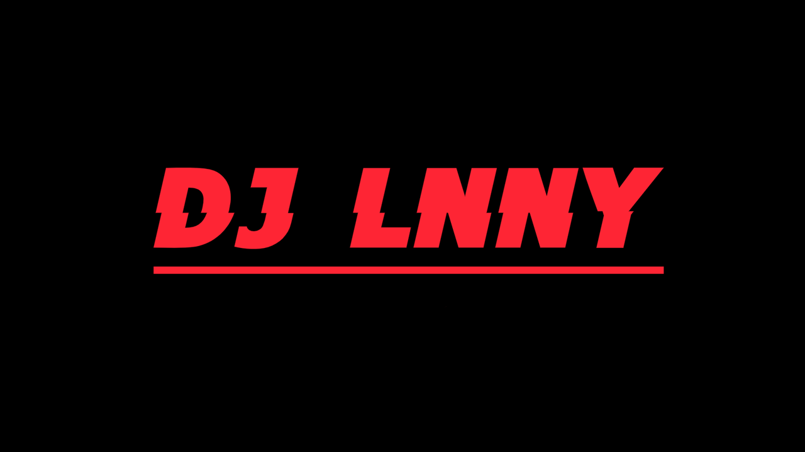

De perfecte match voor jouw event!
Sinds de start van zijn carrière in 2017 heeft Lennert Loones, beter bekend als DJ LNNY, een ijzersterke reputatie opgebouwd in de Vlaamse partyscene. Wat begon op lokale events en dj-contests, groeide in 2021 snel uit tot het grotere werk toen hij werd binnengehaald als resident DJ in de Gentse club Pi-Nuts. Die overstap naar het clubleven bleek de perfecte springplank. Dankzij zijn energieke stijl en feilloze publieksaanvoeling is hij inmiddels een veelgevraagde naam in clubs, legendarische feestcafés, op festivals and high-end privé-events.
Tijdens het academiejaar trekt DJ LNNY wekelijks de Overpoort in Gent volledig op gang, terwijl hij in het weekend te vinden is in meerdere clubs of events. In de zomer van 2026 bereikt hij een absolute mijlpaal: een felbegeerde spot op het hoofdpodium van de Gentse Feesten op Camping Vlasmarkt.
Als rasechte all-rounder heeft DJ LNNY zich gespecialiseerd in het draaien van 'all-nighters'. Van zwoele clubbeats tot hardstyle, en van pop/rock classics tot ultieme meezingers: niets is hem te veel. Zijn absolute handelsmerk? Energieke sets vol white girl music, de grootste hits uit de 10s & 20s en hedendaagse uitgaansmuziek, vloeiend gemixt met eigen, unieke mashups en edits. Die creativiteit trekt hij ook door naar de hardere stijlen, waarbij hij zich volledig thuis voelt in de rawstyle scene. DJ LNNY brengt de dynamiek van de beste clubs rechtstreeks naar jouw dansvloer.
Naast het live mixen achter de decks, kruipt DJ LNNY ook regelmatig de studio in voor het maken van eigen mashups en exclusieve edits. Je kunt zijn meest recente mixtapes, bootlegs en edits beluisteren of gratis downloaden via SoundCloud en VI.BE.
Opmerking: Wegens auteursrechten op SoundCloud zijn de meest recente live-mixes hoofdzakelijk te vinden op het VI.BE platform.
DJ LNNY bracht het feest naar een hoger niveau op onder andere de volgende locaties:
Dranouter festival, Koekeloeren festival, Volksfeesten Moorsel, Frietrock Ieper
Luxx, Delirium, Confrater, Pallieter, Porter House, Pere Total, Vagant, Delta, TamTam
Pi-Nuts Gent, Zeppos Vlasmarkt Gent, Abacho silent disco Gent, Anton XL by Ray Winterfeesten Gent, ZwartWit Gent (Turbo Gantoise), Vagant Roeselare, Bar Canard Roeselare, Bistro Botanique Roeselare, D’hespe Tielt, ‘t Fonteintje Ruiselede, Illuzion Kortrijk, Bar Lionel Wevelgem, The Possé Oostduinkerke, Dinos Knokke, Charlies Ieper, Astor Ieper, Winterbar barski Ieper, Kerstmarkt buxushoeve Ieper, Bistro De Stadsschaal Poperinge, Per Tutti Lier
Kernelle Dentergem, Jh De Troubadour Torhout, Jh Flodder Langemark-Poelkapelle, JOC Ieper, JOC Dadizele
Events van verschillende studentenverenigingen in Gent, Brussel en Brugge. Tal van privé-events (Sweet 16/18, bedrijfsevenementen, sportevenementen, huwelijken) en diverse openbare fuiven.
Beschikbaarheid controleren of direct een vrijblijvende offerte opvragen voor jouw event?